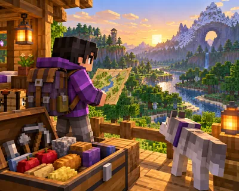

探索不同地方 难度 · 进阶 约 53 词
Ready to Explore
探索前背包放什么？

这篇讲什么
离开基地前，先想好要去哪里。
核心词:Map —— 在画面里找到它,再把单词念出来。
Before you leave your base, think about where you want to go.
游戏里会用到的一句,读两遍再抄一次。
探索不同地方 难度 · 进阶 约 53 词
探索前背包放什么？

离开基地前，先想好要去哪里。
核心词:Map —— 在画面里找到它,再把单词念出来。
Before you leave your base, think about where you want to go.
游戏里会用到的一句,读两遍再抄一次。